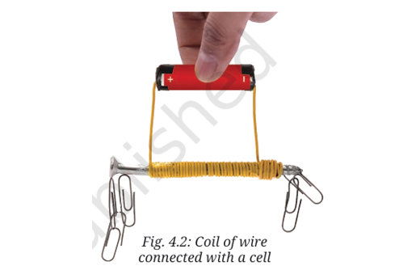
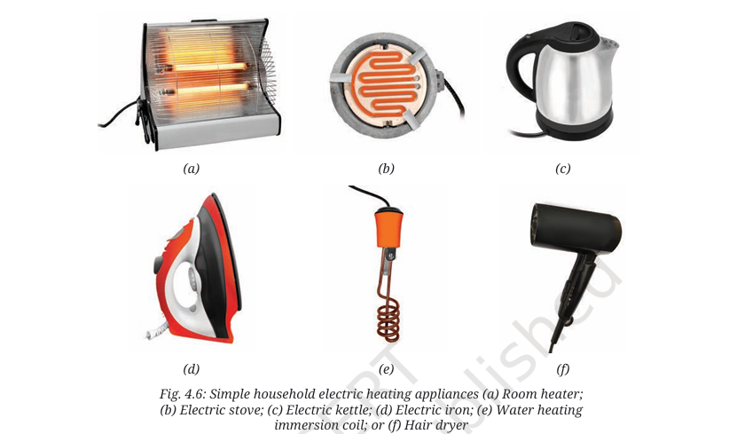

Chapter 4 Electricity: Magnetic and Heating Effects
Curiosity Book - Detailed Notes
Magnetic Effect of Electric Current
Magnetic Effect of Electric Current:
The phenomenon in which an electric current flowing through a conductor produces a magnetic field around it is called the magnetic effect of electric current.
This magnetic field can deflect a magnetic needle or attract iron objects. The effect disappears as soon as the current is switched off.
A simple experiment with a compass shows this effect clearly. If a magnetic compass is placed near a wire carrying current, the needle gets deflected from its original North–South direction. The moment the current is switched off, the needle returns to its position. This shows that the current-carrying wire behaves like a magnet for as long as current flows.
Key Observations
🧭
The compass needle deflects when current flows → proves the presence of a magnetic field.
⚡
The effect exists only when the circuit is closed → no current, no magnetism.
🔄
The direction of the magnetic field depends on the direction of current → reversing current reverses deflection.
Hans Christian Oersted's Discovery
In 1820, Hans Christian Oersted (1777–1851), a Danish scientist, discovered the connection between electricity and magnetism. During a lecture, he observed that a compass needle deflected whenever a nearby electric circuit was switched on. This was the first clear proof that electricity and magnetism are linked. His discovery laid the foundation of electromagnetism, leading to the development of motors, generators, and many devices we use today.
Magnetic Fields Around Us
Magnetic Field
The space around a magnet or a current-carrying conductor where its influence can be detected. It is represented by magnetic lines of force.
Detection: By using a compass needle or sprinkling iron filings around the conductor.
Earth's Magnetic Field
Earth itself behaves like a giant magnet with North and South poles.
Cause: Movement of molten iron inside Earth’s core generates electric currents, which create a magnetic field.
Importance: Guides navigation (compasses), helps migratory birds and animals, and shields Earth from harmful charged particles from space.
Electromagnets
Electromagnet: A temporary magnet formed when an electric current passes through a coil of wire, usually wound around a soft iron core. It becomes magnetic only while current flows.

By winding an insulated wire around an iron nail and connecting it to a cell, the nail behaves like a magnet and attracts iron objects such as pins and paper clips. When the current is switched off, the nail loses its magnetism. This shows that electricity can be used to make magnets whenever required.
Characteristics of Electromagnets
🔌
Electromagnets are temporary magnets → they work only while current flows.
🧲
They have two poles (North and South), just like permanent magnets.
🔄
The poles can be reversed by reversing the current.
📈
The strength can be adjusted by changing current, coil turns, or core material.
Factors Affecting Electromagnet Strength
Current
More current = stronger electromagnet. Example: Using 2 cells gives stronger attraction than 1 cell.
Number of Turns
More turns of the coil = stronger magnet. Example: 100-turn coil is stronger than a 50-turn coil.
Core Material
Air core is weak, but inserting a soft iron core makes the electromagnet much stronger because iron enhances the magnetic effect.
Applications of Electromagnets
Practical Uses
🏭
Lifting Electromagnets: Cranes in factories and scrap yards use electromagnets to lift heavy iron and steel objects. Switching off the current drops the load instantly.
🔔
Electric Bells: The electromagnet pulls a hammer that repeatedly strikes the bell, producing sound.
🎧
Loudspeakers: Electromagnets convert electrical signals into sound vibrations.
⚙️
Motors & Fans: Electromagnets convert electrical energy into mechanical energy, driving countless machines.
Heating Effect of Electric Current
Heating Effect: When electric current flows through a conductor, the conductor resists the flow of electrons. This resistance converts part of electrical energy into heat energy.
You may have noticed that the filament of a bulb or the coil of a heater becomes hot and sometimes glows when current flows. This is because conductors offer resistance, and energy lost in overcoming this resistance appears as heat. Different wires heat up differently depending on their resistance.
Factors Affecting Heat Produced
⚡
Current: More current → more heat. Heat is directly proportional to the square of current.
📏
Length: Longer wire offers more resistance and produces more heat.
📊
Thickness: Thinner wires heat more because they have higher resistance.
⏱️
Time: Longer the current flows, more heat is generated.
Applications of Heating Effect
Domestic Appliances
These appliances use heating coils to generate heat:
Electric heater warms rooms
Iron flattens clothes
Kettle boils water
Hair dryer blows hot air
Industrial Applications
These industrial uses rely on heat generated by electricity:
Electric furnaces melt and recycle metals
Welding uses heat to join metals
Food industries use electric ovens for baking and processing

⚠️ Safety Concerns
🔥
Overheating: May lead to fire hazards.
⚡
Energy Loss: Transmission lines lose energy as heat.
🔌
Damage: Prolonged overheating can melt plugs, sockets, and damage appliances.
Why Nichrome?
Nichrome (Nickel-Chromium alloy) is used in heating devices because:
It has very high resistance.
It can withstand high temperatures without burning.
It does not oxidize quickly when heated.
It has a high melting point and long lifespan.
Electric Cells and Batteries
Electric Cell: A device that generates electricity by converting chemical energy into electrical energy using reactions between electrodes and an electrolyte.
Cells and batteries are portable sources of electricity. They allow us to run torches, radios, clocks, calculators, mobiles, and countless other devices. Let's understand how different types of cells work.
1. Voltaic Cell (The First Battery)
A Voltaic cell, also known as a Galvanic cell, was one of the first electric cells ever invented. It contains:
Two metal plates (electrodes) made of different materials
A liquid electrolyte (usually weak acid or salt solution)
A container (glass or plastic)
The electrodes are partly dipped in the electrolyte. A chemical reaction between the electrodes and the electrolyte produces electricity. When connected in a circuit, electric current flows from the positive terminal to the negative terminal.
How It Works:
⚡
Chemical reactions between electrodes and electrolyte create electricity
🔄
Current flows from positive to negative terminal when circuit is complete
⏱️
Chemicals get used up over time - cell eventually becomes "dead"
Example: A lemon cell, where a copper strip and an iron (or zinc) nail are inserted into a lemon.
The lemon juice acts as the electrolyte and generates electricity through chemical reactions.
2. Dry Cells (Everyday Batteries)
Voltaic cells weren't convenient for daily use, so dry cells were invented. They're called "dry" because they use a paste instead of liquid electrolyte.
Dry Cell Components
Inside a Dry Cell:
Zinc container → Negative terminal (-)
Carbon rod → Positive terminal (+)
Paste electrolyte → Chemical mixture
Advantages & Limitations
Dry Cell Properties:
✓ Portable - Easy to carry
✓ Spill-proof - No liquid to leak
✗ Single use - Cannot be recharged
3. Rechargeable Batteries
Rechargeable batteries are a type of batteries that can be used multiple times by recharging them. This reduces waste and saves money in the long run.
Common Types & Uses:
📱
Mobile phones - Lithium-ion batteries
💻
Laptops - Lithium-ion or NiMH batteries
🔦
Inverters & vehicles - Lead-acid batteries
Note: Even rechargeable batteries don't last forever. After many charge cycles, they gradually lose capacity (which is why phone batteries need charging more often after 1-2 years).
Historical Background
Luigi Galvani (1737–1798): Noticed that a dead frog's leg twitched when touched with two different metals. Believed electricity came from animal tissues.
Alessandro Volta (1745–1827): Proved electricity came from the metals and electrolyte, not animals. Created the first true battery (Voltaic pile) using zinc, copper, and saltwater-soaked paper.
Recycling: Valuable metals like lithium and cobalt can be recovered.
🌱
Sustainability: Developing eco-friendly and renewable battery technologies.
⚠️ Battery Disposal Warning
Batteries contain toxic chemicals (lead, cadmium, nickel, lithium). If thrown in trash, they can:
Pollute soil and water
Cause fires
Harm wildlife and humans
Safe Disposal: Always dispose of used batteries at proper e-waste recycling centers.
Practice Questions
Test your understanding with these practice questions. Click "Show Answer" to reveal the solutions.
Multiple Choice
1. Who discovered the relationship between electricity and magnetism?
a) Alessandro Volta
b) Hans Christian Oersted
c) Luigi Galvani
d) Thomas Edison
Answer: b) Hans Christian Oersted
Explanation: Hans Christian Oersted discovered in 1820 that an electric current creates a magnetic field, establishing the relationship between electricity and magnetism.
Multiple Choice
2. Which of the following will NOT increase the strength of an electromagnet?
a) Increasing the number of turns in the coil
b) Using a thicker iron core
c) Increasing the current flow
d) Increasing the length of the connecting wires
Answer: d) Increasing the length of the connecting wires
Explanation: Longer connecting wires increase resistance and reduce current, which decreases the electromagnet's strength. The other options all increase magnetic strength.
Multiple Choice
3. Nichrome wire is used in heating elements because it:
a) Has low resistance
b) Is cheap
c) Has high resistance and high melting point
d) Is a good conductor of electricity
Answer: c) Has high resistance and high melting point
Explanation: Nichrome's high resistance generates more heat, and its high melting point prevents it from burning out easily when heated.
True/False
4. An electromagnet loses its magnetism when the electric current is switched off.
Answer: True
Explanation: Electromagnets are temporary magnets that only exhibit magnetic properties when electric current flows through them. When current stops, the magnetic field disappears.
Fill in the Blank
5. In a dry cell, the zinc container acts as the __________ terminal.
Answer: negative
Explanation: In a dry cell, the zinc container serves as the negative electrode (terminal), while the carbon rod in the center acts as the positive terminal.
Short Answer
6. Explain why the compass needle deflects when placed near a current-carrying wire.
Answer:
The compass needle deflects near a current-carrying wire because:
Electric current creates a magnetic field around the conductor
The compass needle is itself a small magnet
When placed in this magnetic field, the needle experiences a force
This force causes the needle to align with the magnetic field, resulting in deflection
The deflection stops when the current is switched off as the magnetic field disappears
Short Answer
7. List three factors that affect the strength of an electromagnet and explain how each factor influences the strength.
Answer: Three factors that affect electromagnet strength:
Current magnitude: Strength increases with increasing current. More current creates a stronger magnetic field.
Number of turns in coil: More turns increase the strength. Each turn contributes to the overall magnetic field.
Core material: Using a magnetic material like iron as core significantly increases strength. The core becomes magnetized and adds to the magnetic field.
Long Answer
8. Describe how to make a simple electromagnet. Include a labeled diagram and explain how it works.
Answer: Materials needed: Iron nail, insulated copper wire, battery, switch, connecting wires, iron pins/paper clips
Procedure:
Take an iron nail and wrap the insulated copper wire tightly around it to make a coil. Leave about 10-15 cm of wire free at both ends.
Remove insulation from the free ends of the wire.
Connect one end of the wire to one terminal of a battery through a switch.
Connect the other end of the wire to the other terminal of the battery.
Close the switch to allow current to flow through the coil.
Working: When current flows through the coil, it creates a magnetic field around it. The iron core becomes magnetized and greatly strengthens this magnetic field. The electromagnet can now attract iron objects. When the current is switched off, the magnetic field disappears, and the iron objects are released.
Labeled Diagram: [Would show iron nail with coiled wire connected to battery via switch, with magnetic field lines around the electromagnet]
Long Answer
9. Compare and contrast Voltaic cells and dry cells. Include their construction, working, advantages, and disadvantages.
Answer: Voltaic Cell vs Dry Cell:
Aspect
Voltaic Cell
Dry Cell
Construction
Two different metal electrodes in liquid electrolyte
Zinc container, carbon rod, paste electrolyte
Working
Chemical reaction between electrodes and electrolyte produces electricity
Chemical reaction between zinc and ammonium chloride paste produces electricity
Advantages
Can be made with common materials, demonstrates basic principle
Portable, no spillage, convenient to use
Disadvantages
Not portable, electrolyte can spill, weak current
Single use, not rechargeable, contains harmful chemicals
Application
10. Suppose you need to design an electromagnet that can lift heavy iron objects in a factory. What factors would you consider to make the strongest possible electromagnet? Explain your design choices.
Answer:
To design a strong electromagnet for lifting heavy iron objects:
Core material: Use a soft iron core because iron enhances magnetic strength significantly compared to air core.
Number of turns: Use a large number of turns in the coil (100+ turns) as more turns create a stronger magnetic field.
Current magnitude: Use a high-voltage battery or multiple cells in series to provide greater current, which increases magnetic strength.
Wire thickness: Use thicker wire to reduce resistance and allow more current to flow.
Core shape: Use a U-shaped core to bring the poles closer together, creating a stronger magnetic field in the gap.
Cooling system: Incorporate cooling as high current can heat the wire, which might reduce efficiency or cause damage.
This combination would create a powerful electromagnet capable of lifting heavy iron objects in an industrial setting.